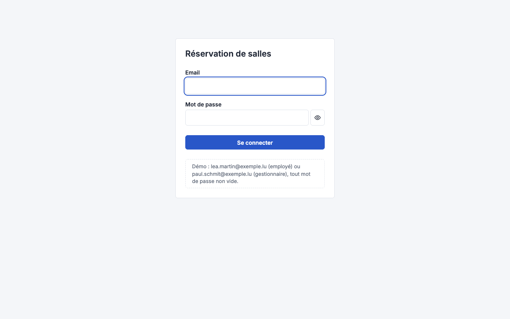
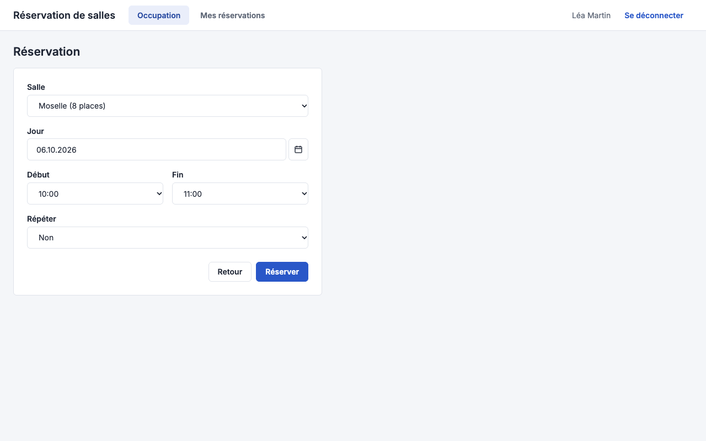
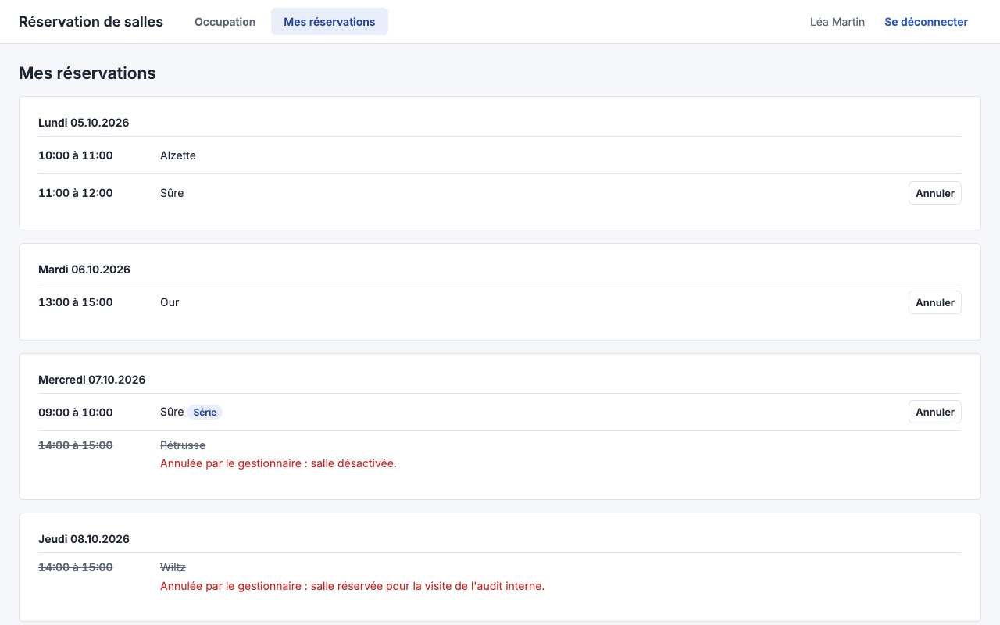

Spec UX/UI : Réservation de salles
L'employé voit d'un coup d'œil ce qui est libre et réserve en moins d'une minute ; le gestionnaire tient le parc sans quitter la vue d'occupation.
Principes UX
Trois à six principes propres au produit. Chacun dit ce qu'il change concrètement sur les écrans.
L'occupation d'abord
Après connexion, on arrive sur la grille du jour (SCR-02) : toutes les salles, tous les créneaux. Un clic sur une case libre ouvre la réservation, préremplie. C'est l'objectif « savoir ce qui est libre en moins de 30 s ».
Le refus avant l'envoi
Les règles du créneau (BR-02, BR-03) sont portées par les sélecteurs : on ne peut choisir qu'un quart d'heure ouvré et futur. Le serveur reste juge du conflit (BR-01), le formulaire garde la saisie si la salle vient d'être prise.
Rien de destructif sans le voir
Toute annulation, désactivation ou série en conflit passe par une boîte de dialogue qui dit ce qui va se passer, avec le nombre d'occurrences concernées. Le bouton par défaut est celui qui ne détruit rien.
Deux rôles, une seule application
Le gestionnaire voit les mêmes écrans que l'employé, plus l'entrée « Parc de salles » et l'action « Annuler avec un motif » sur toute réservation. Pas d'espace d'administration séparé.
Design system appliqué
Le design system du projet, déclaré dans .team/foundation.md. La spec ne recopie ni ses tokens, ni ses composants, ni sa grille : elle dit lesquels elle utilise, et décrit seulement ce que le produit ajoute ou change.
- Socle
- reservation-salles, design system minimal créé pour le projet (aucun n'était imposé)
- Version
- v0.1 du 05.10.2026
- Statut
- à valider à G1
Composants utilisés
| Composant du DS | Variante | Écrans |
|---|---|---|
| Bandeau de navigation | avec menu utilisateur | tous sauf SCR-01 |
| Champ, liste déroulante, sélecteur de date | jours désactivables | SCR-01, SCR-03, SCR-04, SCR-07 |
| Tableau | simple | SCR-06 |
| Dialogue | confirmation, bouton par défaut non destructif | SCR-02, SCR-04, SCR-05, SCR-06 |
| Bandeau de message | succès, erreur | tous |
| Squelette | ligne, bloc | tous les états de chargement |
Compléments et écarts
| Élément | Nature | Écrans | Ce qui est décidé |
|---|---|---|---|
| Grille d'occupation | complément | SCR-02 | composant propre au produit : une ligne par salle, une colonne par quart d'heure ; ses réservations en --color-primary, celles des autres en --color-busy. À verser au DS s'il sert ailleurs. |
| Grille d'occupation sous 768 px | complément | SCR-02 | la grille devient une liste des créneaux libres par salle ; le reste suit la grille du DS |
| Badge « Série » | complément | SCR-05 | étiquette sur une occurrence de série, aux couleurs du bandeau de message |
Parcours utilisateurs
Wireflow : un schéma par persona, les écrans SCR-xx enchaînés par l'action qui fait passer de l'un à l'autre. Une boîte de dialogue appartient à son écran et y revient quand on la ferme : pas de flèche de retour. Un refus qui laisse sur l'écran est un état de l'écran : il figure en pastille, pas en étape. Le titre cite les parcours fonctionnels couverts.
Employé : FL-01, FL-02, FL-03
Gestionnaire : FL-04
Navigation permanente : un bandeau en haut donne accès à SCR-02 « Occupation », SCR-05 « Mes réservations » et, pour le gestionnaire, SCR-06 « Parc de salles ». Le nom de l'utilisateur et « Se déconnecter » sont à droite.
Inventaire des écrans
Une carte par écran, qui mène à son détail. Vignette : capture du prototype (screenshots/SCR-xx-nominal.png), hachurée tant qu'elle n'est pas prise. Les tags listent les états décrits ; un état barré est sans objet pour l'écran.







Couverture des stories du MVP
Chaque story front a un écran, chaque écran a une story. Une ligne par story de la release.
| Story | Écrans | États propres à la story |
|---|---|---|
| US-001 Se connecter | SCR-01 | erreur d'identifiants |
| US-002 Occupation d'une salle | SCR-02 | filtre sur une salle |
| US-003 Occupation de toutes les salles | SCR-02 | nominal, vide |
| US-004 Chercher une salle | SCR-03 | aucun résultat |
| US-005 Réserver un créneau | SCR-04 | conflit, créneau hors règles |
| US-006 Réserver une série | SCR-04 | série, conflits de la série |
| US-007 Lister mes réservations | SCR-05 | vide, annulée avec motif |
| US-008 Annuler une réservation | SCR-05 | dialogue d'annulation |
| US-009 Annuler une série | SCR-05 | dialogue, choix occurrence ou série |
| US-014 Déclarer une salle | SCR-06, SCR-07 | nom déjà pris |
| US-015 Modifier une salle | SCR-06, SCR-07 | fiche préremplie |
| US-016 Désactiver une salle | SCR-06 | dialogue de désactivation |
| US-017 Annuler avec un motif | SCR-02 | dialogue avec motif |
Détail des écrans
Un bloc par écran. Les messages fonctionnels citent leur MSG-xx et sont repris au mot près, parties variables entre chevrons ; les messages d'interface (états vide, erreur technique) sont définis ici en MSG-Uxx. Un état sans objet le dit.
SCR-01 · Connexion
- Objectif
- entrer dans l'application avec son email et son mot de passe
- Accès
- toute page ouverte sans session ; tous les rôles
- Stories
- US-001
- Prototype
- prototype/#SCR-01
Contenu
- Titre « Réservation de salles »
- Champ « Email »
- Champ « Mot de passe », bouton œil pour l'afficher
Actions
- « Se connecter » : ouvre SCR-02, ou la page demandée avant la connexion
| État | Ce qui s'affiche | Message |
|---|---|---|
| nominal | formulaire vide, focus sur « Email » | |
| vide | sans objet : pas de données affichées | |
| chargement | bouton inactif, indicateur dans le bouton | |
| erreur | identifiants refusés : le mot de passe est vidé, l'email reste | MSG-U01 « Email ou mot de passe incorrect. » |
| droits insuffisants | sans objet : écran public |
SCR-02 · Occupation du jour
- Objectif
- voir en un coup d'œil quelles salles sont libres aujourd'hui, ou un autre jour
- Accès
- page d'accueil après connexion, entrée « Occupation » ; tous les rôles
- Stories
- US-002, US-003, US-017
- Prototype
- prototype/#SCR-02
Contenu
- Sélecteur de jour : « ‹ », date JJ.MM.AAAA, « › », « Aujourd'hui »
- Filtre « Salle » (toutes par défaut)
- Grille : une ligne par salle active (nom, capacité), une colonne par heure de 08:00 à 19:00, découpée en quarts d'heure
- Réservation : bloc avec le titulaire et l'horaire ; les siennes en couleur d'accent
| Règle d'affichage | Règle de gestion |
|---|---|
| Seules les salles actives ont une ligne. | BR-08 |
| Les cases passées du jour courant sont grisées et ne s'ouvrent pas. | BR-03 |
| Samedi et dimanche s'affichent sans case cliquable, avec la mention « Pas de réservation le week-end ». | BR-02 |
| État | Ce qui s'affiche | Message |
|---|---|---|
| nominal | grille du jour avec ses réservations | |
| vide | aucune salle active : la grille est remplacée par un message | MSG-U02 « Aucune salle n'est encore déclarée. » ; pour le gestionnaire, lien « Déclarer une salle » |
| chargement | squelette de la grille, sélecteur de jour actif | |
| erreur | la grille tombe, le sélecteur de jour reste | MSG-U03 « L'occupation n'a pas pu être chargée. » + « Réessayer » |
| droits insuffisants | employé : pas de bouton « Annuler avec un motif » dans l'infobulle |
Dialogue « Annuler avec un motif » (gestionnaire)
Proposé seulement pour une réservation qui n'a pas commencé (BR-03, arbitrage IA : la règle vaut aussi pour le gestionnaire). Rappelle salle, jour, horaire et titulaire. Champ « Motif » obligatoire, 200 caractères au plus. « Annuler la réservation » est désactivé tant que le motif est vide ; « Fermer » est le bouton par défaut. Après validation, la case redevient libre et le titulaire voit MSG-05 sur SCR-05 (BR-07).
SCR-03 · Recherche de salle
- Objectif
- trouver une salle libre qui convient à la réunion
- Accès
- « Chercher une salle » depuis SCR-02 ; tous les rôles
- Stories
- US-004
- Prototype
- prototype/#SCR-03
Contenu
- Critères : jour, début, fin, « Participants » (nombre), équipements (cases à cocher)
- Résultats : nom, capacité, équipements, tri par capacité croissante
Actions
- « Chercher » : rafraîchit les résultats
- « Réserver » sur un résultat : ouvre SCR-04 prérempli
| Règle d'affichage | Règle de gestion |
|---|---|
| Les résultats ne montrent que les salles actives, libres sur tout le créneau, assez grandes, avec tous les équipements cochés. | BR-09 |
| État | Ce qui s'affiche | Message |
|---|---|---|
| nominal | critères et liste des salles trouvées | |
| vide | aucun résultat : critères conservés | MSG-U04 « Aucune salle libre ne correspond. Essayez un autre créneau ou moins d'équipements. » |
| chargement | squelette de trois lignes sous les critères | |
| erreur | la liste tombe, les critères restent | MSG-U05 « La recherche n'a pas abouti. » + « Réessayer » |
| droits insuffisants | sans objet : même écran pour tous les rôles |
SCR-04 · Réservation
- Objectif
- poser une réservation, ponctuelle ou en série, sur une salle et un créneau
- Accès
- case libre de SCR-02, « Réserver » de SCR-03 ; tous les rôles
- Stories
- US-005, US-006
- Prototype
- prototype/#SCR-04
Contenu
- « Salle » : liste des salles actives, préremplie
- « Jour » : sélecteur de date, JJ.MM.AAAA
- « Début », « Fin » : listes au quart d'heure, de 08:00 à 19:00
- « Répéter » : « Non » (défaut), « Chaque jour ouvré », « Chaque semaine »
- « Jusqu'au » : visible quand « Répéter » n'est pas « Non », JJ.MM.AAAA
- Récapitulatif : « <n> occurrences » sous le champ, recalculé à chaque changement
| Règle d'affichage | Règle de gestion |
|---|---|
| « Début » et « Fin » ne proposent que des quarts d'heure entre 08:00 et 19:00 ; « Fin » ne propose que les heures à 4 heures au plus après « Début ». | BR-02 |
| Le sélecteur de jour grise le passé et le week-end ; pour le jour courant, « Début » commence au quart d'heure suivant. | BR-02, BR-03 |
| « Jusqu'au » n'accepte pas de date à plus de 3 mois de « Jour » ; au-delà, le champ est signalé invalide et « Réserver » est désactivé. | BR-04 |
| « Réserver » est désactivé tant qu'un champ obligatoire est vide ou invalide. |
| État | Ce qui s'affiche | Message |
|---|---|---|
| nominal | formulaire prérempli depuis l'écran d'origine | |
| série | « Jusqu'au » et le récapitulatif des occurrences apparaissent | « 13 occurrences » |
| vide | sans objet : formulaire de saisie | |
| chargement | pendant l'enregistrement : champs et bouton inactifs, indicateur dans le bouton | |
| conflit | la salle vient d'être prise : bandeau d'erreur au-dessus du formulaire, saisie conservée | MSG-01 « La salle <nom> est déjà réservée de <début> à <fin>. » |
| hors règles | refus du serveur malgré les sélecteurs (horloge décalée) : bandeau d'erreur | MSG-03 « Les réservations se font du lundi au vendredi, de 08:00 à 19:00, par pas de 15 minutes, pour 4 heures au plus. » |
| champ invalide | texte sous le champ, champ marqué invalide, « Réserver » désactivé | MSG-U12 « Choisissez un jour ouvré, à partir d'aujourd'hui. » (Jour) MSG-U13 « La série se termine au plus 3 mois après le premier jour. » (Jusqu'au) |
| erreur | échec technique : bandeau d'erreur, saisie conservée, rien n'est créé | MSG-U06 « La réservation n'a pas pu être enregistrée. Rien n'a été créé. » + « Réessayer » |
| droits insuffisants | sans objet : tout utilisateur connecté réserve |
Dialogue « Conflits de la série »
S'ouvre quand des occurrences de la série sont déjà prises (BR-05). Affiche MSG-04 « <n> occurrences sur <total> sont déjà prises et ne seront pas créées. », puis la liste des dates en conflit (JJ.MM.AAAA). Boutons « Créer les <total − n> occurrences libres » (focus à l'ouverture) et « Revenir au formulaire ». « Échap » revient au formulaire sans rien créer. La liste est annoncée par le lecteur d'écran à l'ouverture.
SCR-05 · Mes réservations
- Objectif
- retrouver ses réservations à venir et en annuler une
- Accès
- entrée « Mes réservations », après une réservation ; tous les rôles, ses propres réservations
- Stories
- US-007, US-008, US-009
- Prototype
- prototype/#SCR-05
Contenu
- Bandeau de confirmation après une réservation (MSG-02), fermable
- Liste par jour, du plus proche au plus lointain : horaire, salle, badge « Série » le cas échéant
- Réservations annulées par le gestionnaire ou par désactivation, barrées, avec leur motif, pendant 7 jours
Actions
- « Annuler » sur une réservation à venir : ouvre le dialogue d'annulation
| Règle d'affichage | Règle de gestion |
|---|---|
| « Annuler » n'apparaît que sur les réservations qui n'ont pas commencé. | BR-03 |
| Une réservation annulée par le gestionnaire affiche « Annulée par le gestionnaire : <motif>. » | BR-07, MSG-05 |
| État | Ce qui s'affiche | Message |
|---|---|---|
| nominal | liste des réservations à venir | |
| vide | aucune réservation à venir | MSG-U07 « Vous n'avez aucune réservation à venir. » + lien « Voir l'occupation » |
| chargement | squelette de trois lignes | |
| erreur | la liste tombe | MSG-U08 « Vos réservations n'ont pas pu être chargées. » + « Réessayer » |
| droits insuffisants | sans objet : on ne voit que les siennes |
Dialogue « Annuler la réservation »
Rappelle salle, jour et horaire. Pour une occurrence de série, deux choix : « Cette occurrence » (défaut) et « Toutes les occurrences à venir de la série » (BR-06), avec le nombre concerné. Boutons « Confirmer l'annulation » et « Garder » (focus à l'ouverture). Après confirmation, la ligne disparaît de la liste.
SCR-06 · Parc de salles
- Objectif
- voir toutes les salles et en déclarer, modifier ou désactiver une
- Accès
- entrée « Parc de salles » ; gestionnaire seulement
- Stories
- US-014, US-015, US-016
- Prototype
- prototype/#SCR-06
Contenu
- Tableau : nom, capacité, équipements, statut (badge « Active » ou « Désactivée »)
- Salles désactivées en fin de liste
| État | Ce qui s'affiche | Message |
|---|---|---|
| nominal | tableau des salles | |
| vide | aucune salle | MSG-U02 « Aucune salle n'est encore déclarée. » + « Nouvelle salle » |
| chargement | squelette du tableau | |
| erreur | le tableau tombe | MSG-U09 « Le parc de salles n'a pas pu être chargé. » + « Réessayer » |
| droits insuffisants | employé : l'entrée n'apparaît pas ; par l'URL, retour à SCR-02 | MSG-U10 « Cette page est réservée au gestionnaire des salles. » |
Dialogue « Désactiver la salle »
Annonce MSG-08 « <n> réservations futures seront annulées avec le motif « salle désactivée ». » (BR-08). Boutons « Désactiver la salle » et « Garder la salle » (focus à l'ouverture). Après validation, MSG-06 s'affiche en bandeau.
SCR-07 · Fiche salle
- Objectif
- déclarer une salle ou corriger ses caractéristiques
- Accès
- « Nouvelle salle » ou « Modifier » depuis SCR-06 ; gestionnaire seulement
- Stories
- US-014, US-015
- Prototype
- prototype/#SCR-07
Contenu
- « Nom », 60 caractères au plus
- « Capacité », nombre de 1 à 200
- « Équipements » : écran, visioconférence, tableau blanc
| Règle d'affichage | Règle de gestion |
|---|---|
| Un nom déjà porté par une salle active est signalé sous le champ à l'enregistrement : MSG-07 « Une salle active porte déjà ce nom. » | BR-10 Q-003 |
| État | Ce qui s'affiche | Message |
|---|---|---|
| nominal | formulaire vide ou prérempli | |
| vide | sans objet : formulaire de saisie | |
| chargement | squelette du formulaire en modification ; bouton inactif à l'enregistrement | |
| champ invalide | texte sous le champ, champ marqué invalide | MSG-U14 « Donnez un nom à la salle. » (Nom) MSG-U15 « La capacité va de 1 à 200 places. » (Capacité) |
| erreur | échec d'enregistrement : bandeau, saisie conservée | MSG-U11 « La salle n'a pas pu être enregistrée. » + « Réessayer » |
| droits insuffisants | comme SCR-06 | MSG-U10 |
Formats de données
Les formats du design system s'appliquent (dates, heures, nombres). Ne figurent ici que les données propres au produit, avec leur affichage et leur saisie.
| Donnée | Affichage | Saisie | Exemple fictif |
|---|---|---|---|
| Jour dans SCR-02 | jour de la semaine en toutes lettres, puis la date du DS | sélecteur de date du DS | mardi 06.10.2026 |
| Créneau | HH:MM à HH:MM | deux listes au quart d'heure | 10:00 à 11:30 |
| Capacité | « <n> places » | nombre entier, 1 à 200 | 12 places |
| Titulaire | Prénom Nom | sans objet | Léa Martin |
Accessibilité
Le niveau et les règles générales viennent du design system. Ici, ce que le produit ajoute, vérifiable à la recette.
- Niveau visé
- celui du design system : WCAG 2.1 AA
- Navigation clavier
- dans la grille de SCR-02, les flèches déplacent d'une case, « Entrée » ouvre la case
- Contrastes
- ceux du DS ; dans la grille, une réservation ne se distingue jamais par la seule couleur (motif et texte)
- Lecteurs d'écran
- chaque case de la grille annonce « <salle>, <heure>, libre » ou « réservée par <titulaire> » ; le titre de la page suit l'écran
Lien vers le prototype
Le prototype est la version cliquable de cette spec. Il doit couvrir les mêmes écrans et les mêmes états.
- Chemin
- prototype/index.html
- Version
- v1 du 05.10.2026
- Écrans couverts
- SCR-01 à SCR-07 et leurs quatre dialogues ; états nominal, chargement et erreur par la barre du proto, vides par le réglage « Données », droits par le réglage « Profil » ; 390 à 1280 px
- Écarts connus
- les erreurs de champ MSG-U12 à MSG-U15 sont signalées par le champ seul, sans leur texte
Micro-interactions
Transitions, retours visuels, temps de réponse perçus.
| Interaction | Déclencheur | Effet | Durée |
|---|---|---|---|
| Survol d'une case libre | souris sur la grille | la case et l'heure de fin par défaut (+1 h) se surlignent | immédiat |
| Bandeau de confirmation | réservation créée | apparaît en haut de SCR-05, la nouvelle ligne clignote une fois | bandeau fermable, ligne 1 s |